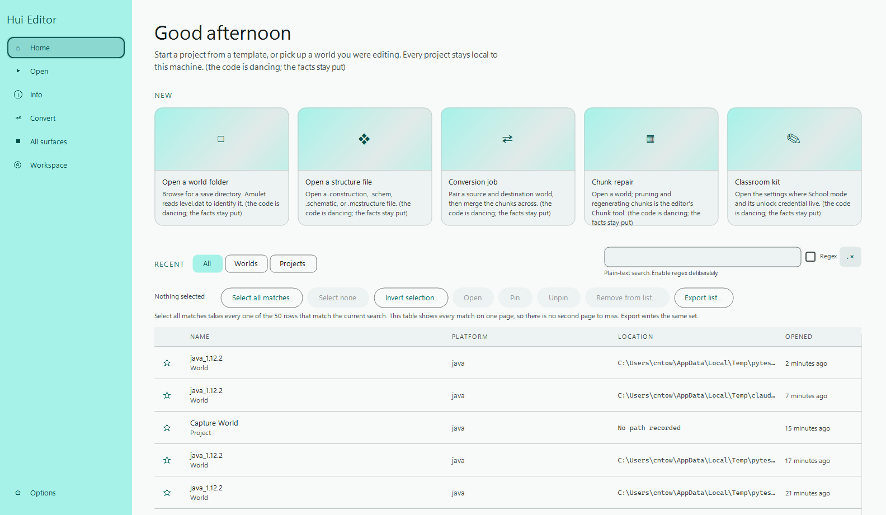

OPEN-SOURCE MINECRAFT WORLD EDITOR · JAVA & BEDROCK
Shape worlds. Keep the wonder.
Open Minecraft worlds outside the game to inspect terrain, select precise regions, move builds between worlds, run block and biome operations, import or export structures, delete or regenerate chunks, and convert world data. Java Edition 1.12+ and Bedrock Edition 1.7+, on a Material Design 3 shell.
Back up every world before editing it. Close the world in Minecraft and any other editor first. Conversion can overwrite chunks in the destination world.

CAPABILITIES IN THIS SOURCE TREE
What the editor can do.
VERIFIED DELIVERY
Publication follows evidence.
GET STARTED
From checkout to installer.
INSTALLER PUBLICATION STATUS
Installer links appear after verification
This site only exposes an immutable installer link after its local release manifest records the verified tag, commit, URL, and SHA-256 digest. No candidate or guessed download is shown.
COMPLETE FEATURE INVENTORY
Every documented feature, no gaps.
One entry per tracked feature article — the editor's own surfaces plus every operating contract. Plain-text search is the default; the bounded regex builder is one click away.
Regex builder · feature search
No feature matches that search. Try a shorter phrase, or switch the regex toggle off.
OFFLINE DOCUMENTATION
The articles, in the page.
Every article is bundled with this page and renders without a network connection. Links between articles resolve here rather than sending you elsewhere.
Regex builder · documentation search
No article matches that search.
REAL APPLICATION SCREENSHOTS
Every capture, with its provenance.
Each image is a tracked screenshot of the real wxPython application. No mockup or generated image is presented as runtime evidence. Every dimension and commit below was verified against the repository before publication.
Regex builder · screenshot search
No capture matches that search.
GUIDES
From download to first edit.
- 01
Choose a verified Windows release
Download the unsigned Squirrel.Windows installer from a release with verified
Setup.exe,RELEASES, and full package assets. Read the release notes before opening a world. - 02
Open a copy of your world
Keep a backup, then open the copy. The page-based workspace keeps world selection and editing tools close at hand.
- 03
Make one change, then export
Target the smallest useful area, inspect the result, and save or export from the workflow that owns the change.
- 04
Keep the history
Local append-only Git history records settings, exports, filters, and restores so a change can be recovered without syncing user data anywhere.
OPEN PROJECT
Bring a question, a fix, or a map.
Discussions
Compare workflows and ask for help. One rolling progress thread records meaningful milestones.
Open discussions ↗Issues
Report reproducible bugs and propose improvements.
Browse issues ↗Feature articles
Behaviour, configuration, failure modes, security boundaries, and verification evidence.
Read the index ↗CI evidence
Windows build and unit-test workflows provide the visible baseline for every change.
Open Actions ↗RELEASE HISTORY
Every version, with the commit that made it.
Real releases read from the repository's own catalogue. An entry that cannot name its commit says so rather than guessing at a neighbour.
Regex builder · changelog search
No release matches that search.
LOCAL VERSION HISTORY
Every change you made here, undoable.
Append-only, in this browser. Restoring is recorded as a new revision rather than a rewrite, so an undo can itself be undone.
Regex builder · history search
No revision matches that search.
PERSONALIZE THIS SITE
Every setting, wired to the real control.
Preferences persist in this browser and apply immediately. Funny levels style the surrounding copy; facts and links stay exact.
Regex builder · settings search
No setting matches that search.
Appearance presets and saved themes
Scheduled settings
REAL WORLD, REAL CAMERA
The WebGL2 viewport.
A live, streaming render of the currently open world: the Python mesher builds real chunk geometry, this page's own WebGL2 renderer draws it, and the camera below is yours to move.
LOCKS, CODES AND THE WAY BACK IN
A two-factor authenticator, and locks that are honestly toys.
The QR is drawn in this page from local code, because a remote QR service is handed the secret on the way to drawing it. The locks are for fun and say so. Support Tickets is the recovery route, and it works.